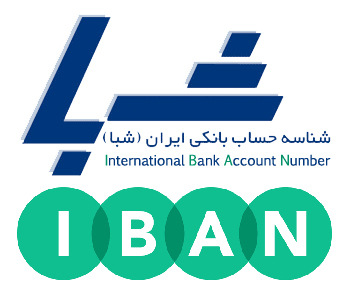
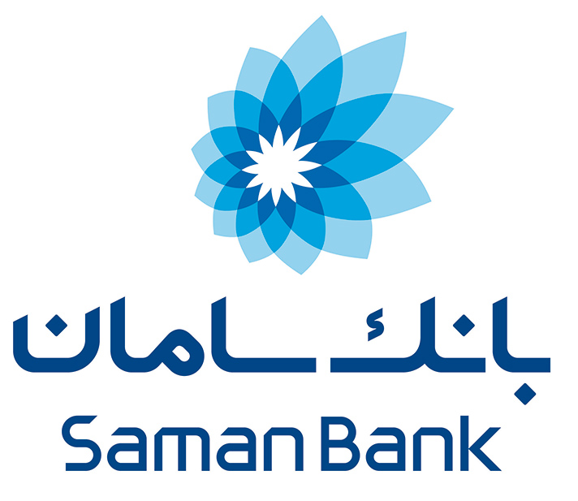

سادهترین و بهترین گزینه برای هردوی ما زرین پال است، استفاده از آن بسیار راحت بوده، کاملا ایمن است و برای شما کارمزدی هم ندارد. لطفاً در بخش «توضیحات» صفحه پرداخت، نام پروژه مورد پشتیبانی را نیز بنویسید.
یکی دیگر از راههای ساده و مطمئن گزینه کارت به کارت است، برای این منظور مبلغ مورد نظر را به شماره کارت ۱۸۷۴-۲۴۰۲-۸۶۱۰-۶۲۱۹ بانک سامان به نام محسن کرمی واریز نمایید.
واریز از طریق شبا سرعت عمل کارت به کارت را ندارد ولی من که با آن مشکلی ندارم! پس اگر دوست دارید بدون کارمزد پول به حسابم واریز کنید از شماره شبای IR240560926180001054330001 بانک سامان به نام محسن کرمی استفاده نمایید.
هنوز هم برخی به شماره حساب علاقه دارند و کارهایشان را ترجیح میدهند از این راه به انجام برسانند، پس برای این دسته از دوستان نیز شماره حساب ۱-۱۰۵۴۳۳۰-۸۰۰-۹۲۶۱ بانک سامان به نام محسن کرمی را پیشنهاد میکنم.